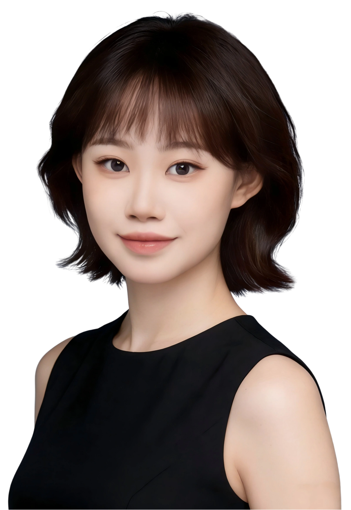
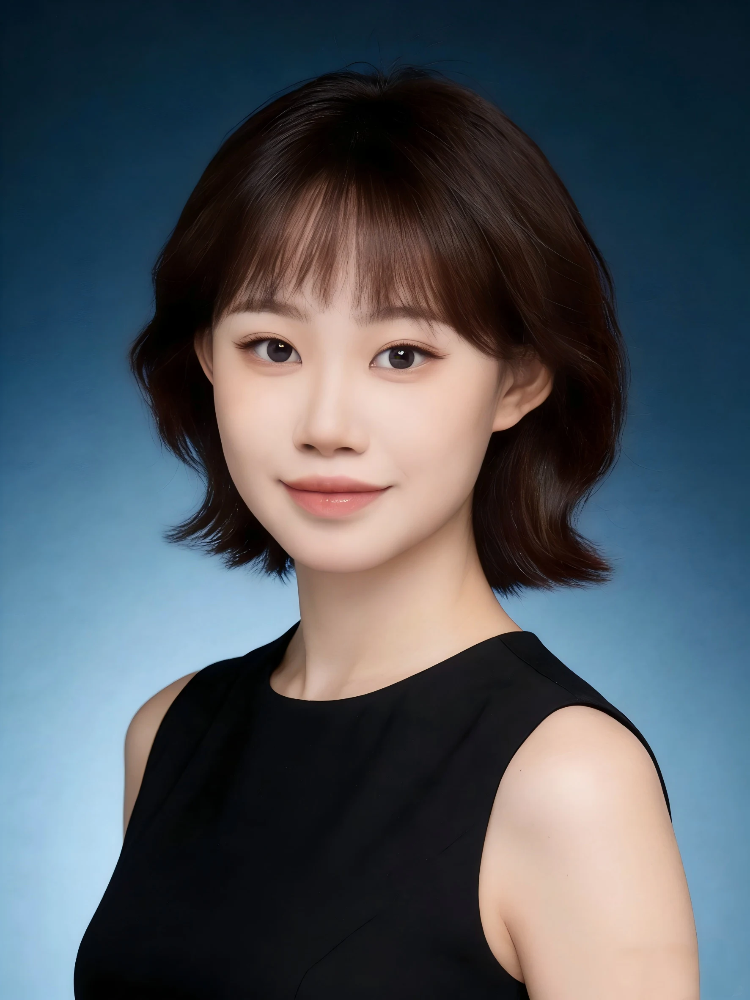

专业能力扎实，具备多领域创作技能
掌握平面设计、视频剪辑、3D建模、AIGC工具应用及基础编程，能够独立完成从概念到落地的视觉与多媒体项目，已初步形成跨媒介设计能力。作品曾获“中国之星设计奖”银奖、大广赛全国三等奖等多项国家级奖项。

视觉设计师 &
多媒体创意探索者

视觉设计师 &
多媒体创意探索者
我关注设计的表达，也关注用户体验与商业价值。从平面、包装到 3D 与交互，让好奇心转化为具体的作品。
2023 — 预计 2027
视觉传达设计专业 · 本科
掌握平面设计、视频剪辑、3D建模、AIGC工具应用及基础编程，能够独立完成从概念到落地的视觉与多媒体项目，已初步形成跨媒介设计能力。作品曾获“中国之星设计奖”银奖、大广赛全国三等奖等多项国家级奖项。
热爱产品与商业设计，擅长从市场与用户视角出发思考设计策略，在策划案中持续关注用户体验与商业可行性，相关作品曾获中国大学生广告艺术节学院奖、中国大学生公共关系策划创业大赛等多个全国性赛事奖项。
曾长期担任宣传部部长等职务，并多次作为团队负责人参与创新创业大赛及策划项目，具备良好的团队统筹、沟通协调与多任务执行能力，能高效推进项目进展。
始终保持谦逊好学态度，主动拓展技能边界，积极适应行业与工具变化，并通过竞赛与实践不断深化专业理解与执行能力。
2023 — 2026.11
曾参与中国传媒大学学生会微信公众号平台运营；进行微博、抖音、小红书等自媒体账号运营。
曾独立运营“中国传媒大学设计思维学院”官方微信公众号，全面负责内容策划、编辑发布与粉丝互动。
从零开始进行账号定位与内容规划，累计吸引关注人数3,034人，建立起稳定的校内师生及设计领域受众群体。
围绕设计思维、创新教育、校园活动等主题，累计策划并发布推文 101 篇，内容涵盖专业观点分享、课程项目展示、行业资讯解读等，保持内容专业性与传播性兼具。
推文累计获得阅读量43,462次，平均阅读互动表现稳定，有效提升了学院在设计与教育领域的线上影响力与品牌认知。
看看头图与推送作品熟练运用Photoshop, Illustrator, Procreate, Figma, Canva, 秀米等作图排版设计软件，具有扎实的美术功底和视觉能力，掌握流行审美趋势。
熟练运用Adobe Premiere, Adobe After Effects, 剪映等视频剪辑软件，熟悉短视频运营机制，挖掘更多设计创意点。
熟练运用 3ds Max, ZBrush, Marmoset Toolbag, KeyShot, Adobe Substance Painter, Unreal Engine等软件，能独立完成建模项目运营方案。
熟练运用Microsoft Office系列（Word、Excel、PowerPoint）、WPS等办公软件，掌握各类文档、表格、演示文稿的高效制作与排版设计，具备扎实的办公软件操作功底和文档处理能力。
熟练运用 ChatGPT, Gemini, DeepSeek等大语言模型进行精准提问与内容操控。运用Midjourney, Stable Diffusion, Runway, LiblibAI, 可灵AI, 即梦AI进行图像和视频生成、风格化与迭代优化，大幅提升效率与创意维度。
熟练运用 JavaScript, Python 进行前端开发，掌握 GitHub 进行版本控制与协作。能通过 V0和Cursor生成可交互 UI 组件与界面原型，并运用 TouchDesigner、p5.js、Processing 及 Arduino进行创意编程、实时视觉生成、交互装置与数据可视化，可高效实现从创意原型到产品级应用的开发流程。
一些创作路上的鼓励。
点击查看完整获奖证明。
First, do it; then, do it right; finally, do it better.